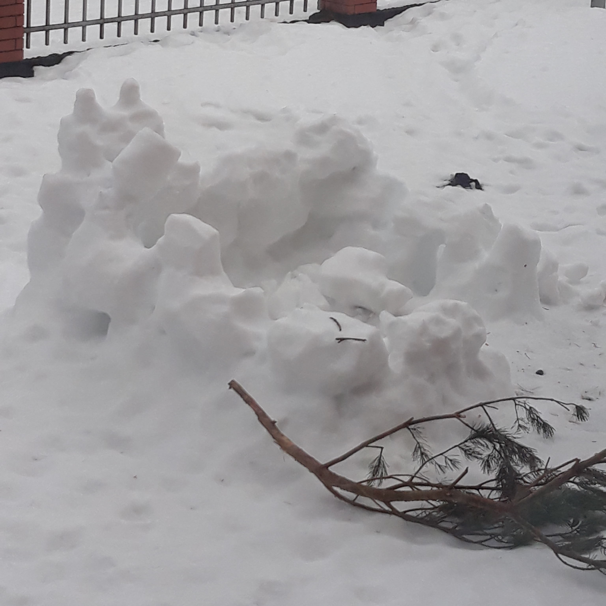

Usual winter activities:
Table containing 3 popular winter activity places here
Personally, I don't really like winter and it's activities, but I share some that my family has done during these months.
One of those being a snow fort that was made in our backyard or sled riding in he šmerļa forest.
Other winter activities here